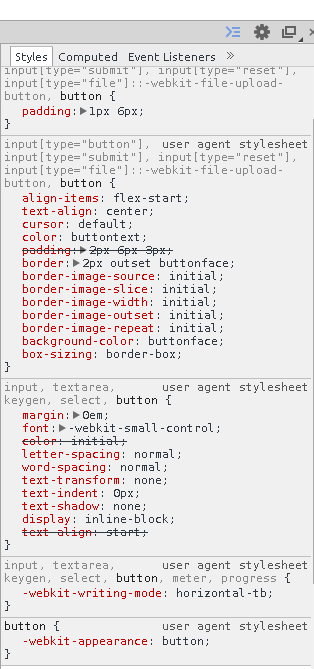
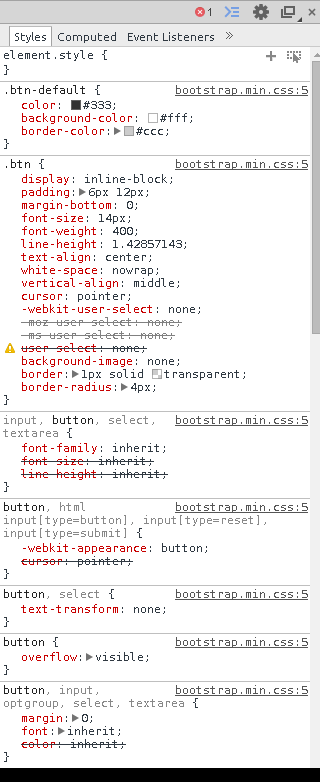
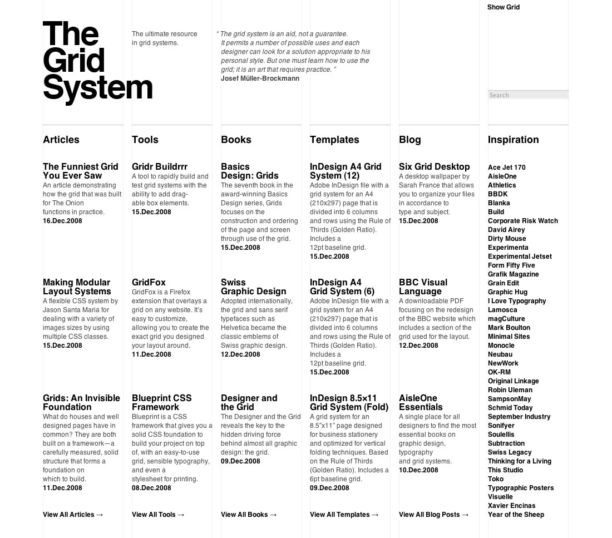

Bootstrap
What / Why / How
Why
-
bootstrap lets us create simple and clean looking web pages without spending a lot of time.
-
It connects to what we've previously learned because we will able to use CSS classes written by others to style our pages.
Refresher
-
What's CSS?
-
How is it different than HTML?
-
What's a CSS class?
-
How about ID?
-
When do we use one versus the other?
What
Twitter bootstrap is:
-
A CSS and JavaScript
What is a "library?"
-
It is written by former Twitter employees.
Library
A Library is:
-
Body of code
-
Others have written
You can too!
-
Makes our lives easier.
Bootstrap helps us...
-
Code faster.
-
Build faster.
-
Rather than writing our own CSS which takes time, we can use Bootstrap's styles in our HTML pages.
-
For this unit, we will only look at the CSS aspects of Bootstrap.
Installation
Let's bring it to our project:
Using these tags:
<head>
<link>
</head>
Rather than writing our own CSS which takes time, we can use Bootstrap's styles in our HTML pages.
Let's Do It!
<html>
<head>
<link rel="stylesheet" href="//maxcdn.bootstrapcdn.com/bootstrap/3.2.0/css/bootstrap.min.css">
<title>My first bootstrap page!</title>
</head>
<body>
Hello world!
</body>
</html>
Linking to the library
Note the link where the Bootstrap CSS file is located.
Another website is hosting this file for us.
This is convenient because :
-
we don't have to download the file and store it in our own project.
Deep Dive
Let's take a look at a single element before the inclusion of Bootstrap and afterwards. Consider the following code:
<html>
<head>
<title>Hello world!</title>
</head>
<body>
<button type="button" class="btn btn-default">Click me</button>
</body>
</html>
Click Here to see what it looks like
A Closer Look
Using the Chrome browser, right click on the button and click on "Inspect element". Look at the right side of the new screen. It should look something like:

What did we just look at?
These are all the styles being applied to that button.
But wait...
We don't have a CSS file in our project.
We haven't written any styles for our button so where are these styles coming from?
Well...
These styles are coming from the browser. Every browser has its default styles.
Enter Bootstrap!
Let's now insert bootstrap into our code above. Consider the following code:
<html>
<head>
<link rel="stylesheet" href="//maxcdn.bootstrapcdn.com/bootstrap/3.2.0/css/bootstrap.min.css">
<title>Hello world!</title>
</head>
<body>
<button type="button" class="btn btn-default">Click me</button>
</body>
</html>
Results!
Click Here to see what this code looks like.
Notice that the button looks different.
Again, right click on the button and click on "Inspect element." It should look something like:

Notice that...
-
The new styles being applied to the button.
-
The styles are all coming from bootstrap.min.css which is the file we're bringing in using the <link> tag.
-
By just including one file into our HTML file, we get hundreds of styles for free. Our button now looks better than the default version and we didn't even have to write any CSS to accomplish that.
Text
Bootstrap has many styles for controlling the appearance of text.
Go Here for more details.
Grid systems
why? Visual coherence, and making design easier.

Bootstrap Grid system
Bootstrap offers a grid system that lets you arrange you content in columns and rows. Using this structure will also make your webpage viewable in different sizes such as on a smartphone.
Consider the following code:
<html>
<head>
<link rel="stylesheet" href="//maxcdn.bootstrapcdn.com/bootstrap/3.2.0/css/bootstrap.min.css">
<style type="text/css">
.col-md-1
{
background-color: red;
border: 1px solid;
}
.col-md-4
{
background-color: lightblue;
border: 1px solid;
}
.col-md-6
{
background-color: lightgreen;
border: 1px solid;
}
.col-md-8
{
background-color: pink;
border: 1px solid;
}
</style>
<title>Hello world!</title>
</head>
<body>
<div class="container-fluid">
<div class="row">
<div class="col-md-1">.col-md-1</div>
<div class="col-md-1">.col-md-1</div>
<div class="col-md-1">.col-md-1</div>
<div class="col-md-1">.col-md-1</div>
<div class="col-md-1">.col-md-1</div>
<div class="col-md-1">.col-md-1</div>
<div class="col-md-1">.col-md-1</div>
<div class="col-md-1">.col-md-1</div>
<div class="col-md-1">.col-md-1</div>
<div class="col-md-1">.col-md-1</div>
<div class="col-md-1">.col-md-1</div>
<div class="col-md-1">.col-md-1</div>
</div>
<br/><br/>
<div class="row">
<div class="col-md-8">.col-md-8</div>
<div class="col-md-4">.col-md-4</div>
</div>
<br/<<br/>
<div class="row">
<div class="col-md-4"<.col-md-4>/div>
<div class="col-md-4"<.col-md-4>/div>
<div class="col-md-4"<.col-md-4>/div>
</div>
<br/><br/>
<div class="row">
<div class="col-md-6">.col-md-6</div>
<div class="col-md-6">.col-md-6</div>
</div>
</div>
</body>
</html>
Click Here to see the produced page.
Code Breakdown
Let's break this down:
-
There are four rows total in this grid.
-
In the first row, there are 12 columns each sized with 1 unit.
-
In the second row, there are two columns sized 8 units and 4 units respectively.
-
In the third row, there are three columns equally sized 4 units.
-
Finally, in the last row, there are two columns each sized 8 units.
-
These units specify the width of the column.
-
Bootstrap allows for the total width of a row to add up to 12 units maxiumum.
Let's get busy!
We're going to make a page about your school with Boostrap in it.
Let's have the reference documentation open.
-
Let's start from scratch and create an empty page. Let's get our head and body tags correct.
-
Let's include Bootstrap into it.
-
Let's use the h1 tag at the very top to include the name of your school.
-
Let's use the h2 tag to write an "Address" heading.
-
Let's use the address tag that Bootstrap offers to write down the address of your school.
-
Let's make another h2 tag to write an "Alma mater" heading.
-
Let's use the blockquote tag that Bootstrap offers us to write down your school's alma mater.
-
Let's make another h2 tag to write a "Roster" heading.
-
Let's create a grid with 3 equally sized columns using Bootstrap's grid system. Each cell of the grid should have the name of a student in our ScriptEd class.
Independent practice
Repeat the exercise above with the following changes:
-
Do it for the college you wish to attend in the future.
-
For (9), make the grid have 4 equally sized columns. Fill it with the name of alumni; you can get names from the "Notable alumni" section of the college's Wikipedia entry.
-
Add another sub-heading and call it "Campus". Include a picture of the campus shaped in a circle. Hint here.
Wrap up
Today you learned about Twitter bootstrap. This is important because Bootstrap allows us to create clean and elegant HTML without writing additional CSS